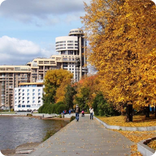
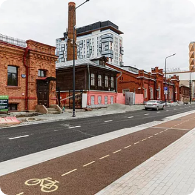
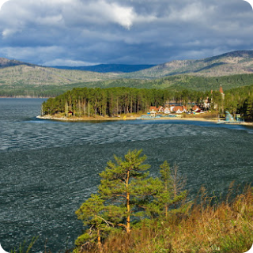

Вокруг реки Исеть


Описание:
История города Екатеринбурга ведет отсчет с 1723 года, когда на реке Исети был основан завод-крепость, именно вокруг этой красивой реки проходит данный маршрут. На нем вы увидите прекрасные сады возле главного здания Свердловской ЖД, прокатитесь по паркам УрГУПС’а и 22 партсъезда с шикарными видами, посмотрите здания правительства области и администрации города Екатеринбург, полюбуетесь видами на набережной, заедете к памятнику человека, в честь которого был назван Екатеринбург в Советское время, а также почувствуете дух «меховой» улицы нашего города.
Тип маршрута: Городской
Ссылка на скачивание .gpx

Вокруг реки Исеть
Точка старта: памятник Уральскому добровольческому танковому корпусу
Маршрут: памятник Удтк - Макаровский мост - парк УрГУПС - парк партсъезда - набережная рабочей молодежи –
администрация города - цирк - плотинка - театр оперы и балета - Храм на крови - Харитоновский сад - памятник Удтк.

Исторический район
ул.Вайнера, 11 - ул. Радищева - парк Зеленная роща 1,8км
Достопримечательности...

Улица Отдыха
ул. Отдыха 107Б - ул. Отдыха 11 2.8 км
Достопримечательности...